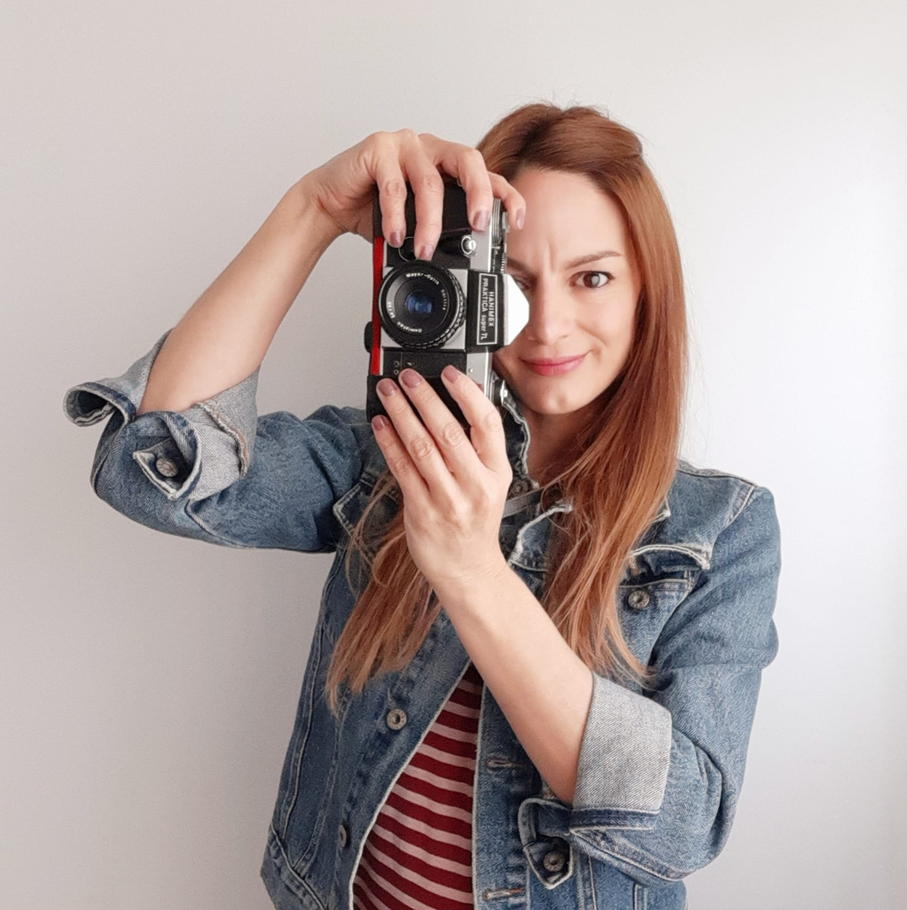
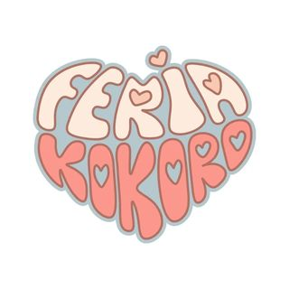
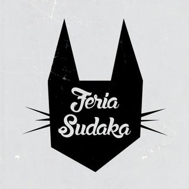
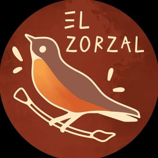

Salida fotográfica grupal ✢ 4 de Mayo 2014

@travelfotografia
¿Dónde? Retiro
Horario 16hs a 18hs
Aprendé a sacar fotografías urbanas de manera didáctica y divertida mientras recorremos los rincones más lindos del barrio de Retiro con esos hermosos palacios de la aristocracia del siglo pasado a recorrer su arquitectura, historia y hacer lo que más nos gusta: Fotos.
Feria Kokoro ✢ 14 de Mayo 2014

@feriakokoro
¿DÓNDE? Caballito
HORARIO 14hs a 19hs
¡Hermosa Comunidad Amante del Arte! Podrás explorar y apoyar el increíble trabajo de artistas. Sé de los primeros en llegar y podrás participar de la búsqueda de sellos de 54 artistas que encontrarás en el evento.
Feria Sudaka ✢ 17 de Mayo 2014

@feriasudakalomas
¿DÓNDE? Lomas de Zamora
HORARIO 15hs a 20hs
Mercado de moda circular, diseño y arte. Más de 50 emprendimientos autogestivo sdel barrio, diseño local e independiente, accesorios y arte. Es la última del mes!! No te la pierdas!! A buscar esos tesoros, bonitos y baratos.
Jam de modelo vivo temática ✢ 10 de junio 2014

@elzorzalestudio
¿DÓNDE? Colegiales
HORARIO 21hs a 23:30hs
Veni a dibujar y pasar una noche hermosa en el taller de zorzal con un JAM de modelo vivo con la temática "Monstruos y máscaras". Musica en vivo, performance, barra de comida y bebida. CUPOS LIMITADISIMOS, reserva tu entrada.
Festival Kill the Networld volúmen 5 ✢ 10 de junio 2014
@wratdy
¿DÓNDE? Villa Ortuzar, CABA.
HORARIO 20hs.
Festival donde el primer protagonista es el arte. Te invitamos a salirte de la pantalla para vivir todo lo que esta pasando, con los artistas más interesantes del movimiento artístico emergente de buenos aires.